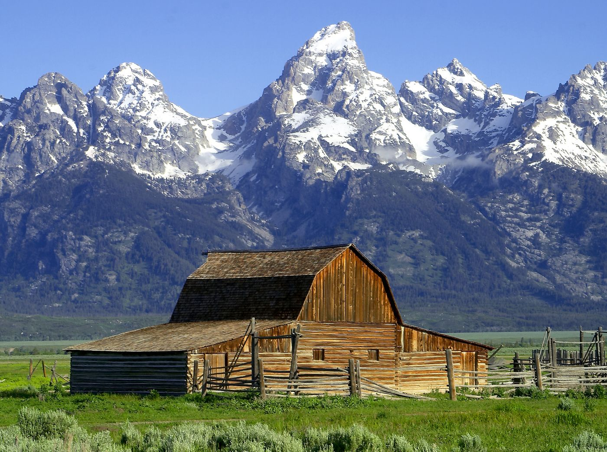

Fri Jun 11
Land, pick up the car, head north
JAC to Colter Bay: about 50 min, plus stops. Optional grocery run in Jackson: about 20 min south each way.
- Afternoon
- Pick up the rental at the airport. Optional quick detour to a Jackson supermarket for snacks and picnic food; it's cheaper and bigger than the Colter Bay store.
- On the way
- Stops at the Mormon Row barns and the Snake River Overlook, the Ansel Adams view.
- 4:00 PM
- Check in at Colter Bay. Bear spray is sold at the general store.
- Evening
- Lakeshore Trail at sunset (about 2 miles, easy), or Oxbow Bend 10 minutes away for moose at dusk.
Learn more Jackson Hole Airport · Colter Bay area guide (NPS) · Colter Bay hikes
Everyone